Bill, your notes: please check each fix
- Each card shows your note, what we did, and a before screenshot with the spot outlined in red.
- Click See the fix. The page opens right at the change, already in the right state (menu, panel or mode open), and the spot is outlined in red for a few seconds.
- If it is right, open See your note and resolve it there. If it is not right, reply to the note on the page and say what is wrong.
This round is a design refresh of the current system only. Anything the current system does not have, including ideas you suggested, is on the list for after go-live (at the bottom), so nothing is lost. Where you asked to remove something, it is hidden, not deleted.
Reading the notes…
- #1Accounting · View All2026-11-11Removed (hidden, not deleted)…
again I don't think we need a print button to print out this page. if someone was really needing to print the page they can use the browser print button but I think they use downloadable spreadsheets vs ever printing this page
What we did Print button commented out in the HTML

01-accounting-print - #2Accounting · View All2026-11-11Done…
missing a Marketing column so we can see who has marketing and who doesn't. Maybe that was added after the mockups were started but we have that column in the live system now
What we did Marketing column added; flag from the Manage Dealers export (44 of 205). Checked in the live system on Nov 16: the flag is the dealer's Marketing Package (live Manage Dealers: "Has Marketing Package = 58 · Does Not Have Marketing Package = 256"), the same one the column reads. No change
- #3Dealer Edit2026-11-11Done…
I know we use to have another tab in the dealer setup forms but we removed that tab on purpose because it was never used and I think this was on that screen otherwise not sure where you got this from so it should be removed
What we did
ZONE_HIDDEN= Inventory & DMS, Email Routing, Web & Domains; rail fix so Notes lights up at the page end - #4Dealer Edit2026-11-11Done…
I know we use to have another tab in the dealer setup forms but we removed that tab on purpose because it was never used and I think this was on that screen otherwise not sure where you got this from so it should be removed
What we did
ZONE_HIDDEN= Inventory & DMS, Email Routing, Web & Domains; rail fix so Notes lights up at the page end - #5Dealer Edit2026-11-11Done…
I know we use to have another tab in the dealer setup forms but we removed that tab on purpose because it was never used and I think this was on that screen otherwise not sure where you got this from so it should be removed
What we did
ZONE_HIDDEN= Inventory & DMS, Email Routing, Web & Domains; rail fix so Notes lights up at the page end - #6Dealer Edit2026-11-11Built, as in the current system…
in the live system if you click yes a couple more fields shows up
What we did checked in the live Dealer Account Settings on Nov 16: Yes reveals one field, Select Group ("Please select group" + 47 dealer groups). In the mockup it opens beside the Yes / No switch in the same cell, so nothing else moves (below about 1024px it drops under the switch). The group names are the live list's Bill, Nov 17: "there should be also a button to add a new group". Checked in the live Dealer Edit again (Nov 17): there is one, New Group beside Select Group (missed on Nov 16). It opens a small window (
createGroup.php, which answers 403 when opened directly, so its fields could not be read; Bill describes only a name). Built: New Group beside the list; it swaps the list for a "New group name" field with Add / Cancel in the same row (Enter adds, Esc cancels), and the new group goes into the list A–Z and is selected, which marks the form unsaved. Below 1024, where the group sits under the switch, the list takes the full width with its button under it, in both modes, so nothing moves - #7Manage Dealers2026-11-11Done…
remove "CL" it is old feature that is no longer used so this is not needed in the display
What we did
FEAT_HIDDEN = ['CL']in the JS; CL stays in the data. Checked in the live system on Nov 16: CL is a text code of its own, separate from the Craigslist icon, and the live legend (Craigslist · Carfax · LS = LMS · Facebook · IN = Incentives · Ebay · LV = Lot Vantage) does not list it. Hiding CL leaves Craigslist alone. Alex, Nov 16: keep the CRAIGSLIST tag (Bill asked only for CL); whether Craigslist is still used goes to Ivaylo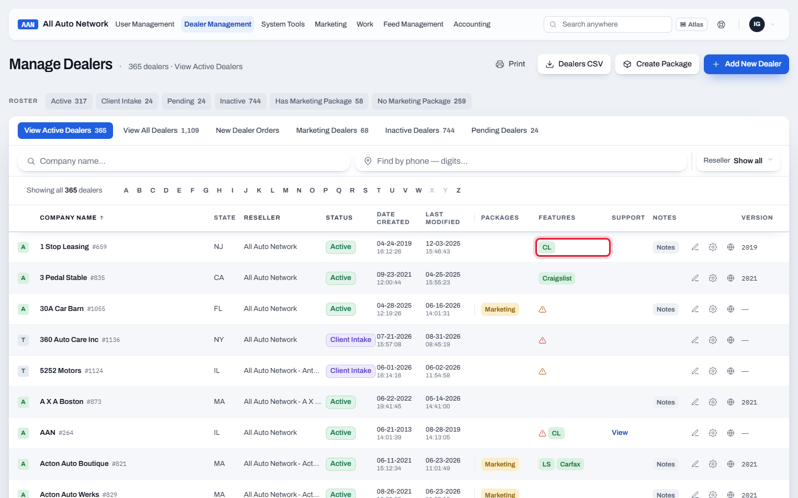
07-manage-dealers-CL - #8Manage Dealers2026-11-11Built, as in the current system…
Need a "Dealer Intake Form Answers" link on the right side here. Also a link to "Config Manual" that opens a popup with page template examples as we use these a lot too
What we did two quiet text links at the right end of the Roster strip (Accounting's utility-link style). Checked in the live Manage Dealers on Nov 16: Config Manual opens a popup of 21 inventory.php page-template examples. It is built word for word, as a dialog with one example per line in the code face. Dealer Intake Form Answers is a plain link to a Google Sheet. Its address is not copied into the published mockup; Ivaylo wires the real one
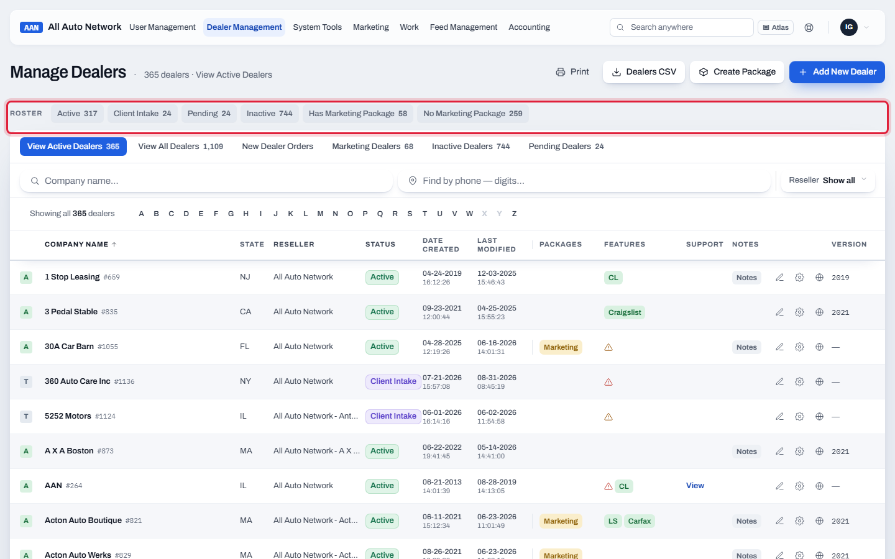
08-manage-dealers-tally - #9Manage Dealers2026-11-11Done…
please have it show all items and not a +2 as we need to see these items as no way to know what they have without seeing it
What we did every feature tag shown; the old "+N" code is commented out; the 6 rows with three tags grow to 63px, all others stay 56px

09-manage-dealers-plus2 - #10Manage Dealers2026-11-11Done…
change LS to LMS so that we know what it means
What we did
FEAT_LABEL = { LS: 'LMS' }
10-manage-dealers-LS - #11Manage Dealers2026-11-11Removed (hidden, not deleted)…
button not needed, can you browser print button if you want to print this page or use a screen shot tool to get an image of the page but we don't have this feature in live system so not needed
What we did Print button commented out; the JS is guarded

02-manage-dealers-print - #12Single Ticket2026-11-11Done…
these should be editable so that if assigned wrong it can be changed easily
What we did each head chip (status · priority · work type) is a button that scrolls to the Work Order and focuses its field

12-single-ticket-head-chips - #13Single Ticket2026-11-11Done…
Where are the fields for assiging to the dealership (sometimes tickets get mis-assigned to the wrong dealer and that needs to be able to be changed. Also there should be fields to enter the Name, email(s), phone and subject line and they should always be present in the tickets as sometimes we need to add more emails or change the subject or add something that wasn't added originally.
What we did the hidden Work Order section is shown again and back in the navigator (it held exactly these fields). This answers the old team question Q10. To undo: put
hiddenback on#s-work
13-single-ticket-no-client-fields - #14Single Ticket2026-11-11Built, as in the current system…
need ability to add a file attachement to a todo as well
What we did Alex, Nov 15: the live system has this option. The ToDo composer got the same file drop as Messages / Internal notes; posting puts the files on the ToDo and into Attachments. The × for a picked file and Remove ToDo (both added Nov 15) are commented out again: not in the old system (facelift rule, Alex Nov 16); on the New features list. Also fixed: after posting, the navigator lit the first tab instead of the section you are in
- #15Single Ticket2026-11-11After go-live…
Does not need to be part of the mockup since this is a new feature request, but one idea I have been asking for, for years now is the ability to tag a ticket as "waiting on co-worker" checkbox and drop down to select the person you are waiting on. This allows a ticket assigned to multiple people to have it as waiting on my work list while on the other persons list it is open active ticket. Say I need to update images on a site, but I have to wait for Alex to make those images then on my list the ticket is waiting on Alex to complete his part of the ticket and once he is tagged completed then it will open up on my list. I just wanted the notes here again since this feature is needed but has yet to be built and once we get the new system up and running it is a feature that should be built into it.
What we did New features list
- #16Single Ticket2026-11-11Done…
We need the time examples like in the live system so it makes it faster for employees to enter their time. Otherwise if not here then they have to waste time trying to remember or figure out the correct decimals to add for each time add. the time display is in 5 minute increments from 5 minutes to 1 hour
What we did the export's "Time entry help" was a folded
<details>at the end of the dock. It is now open under the time totals as a 3 × 4 grid (figures verbatim: 5 min = 0.08 … 1 hour = 1.00) plus the accepted formats
16-single-ticket-time-help - #17Single Ticket2026-11-11Removed (hidden, not deleted)…
dates should always be open and available we do not need a toggle that wastes time when assigning out tickets for more clicks.
What we did Begin / Done by are always shown in every assignee card; the Dates button is commented out
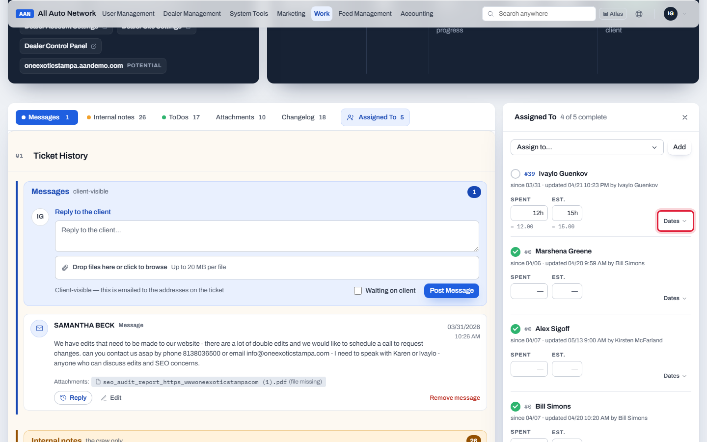
17-single-ticket-dates-toggle - #18My Work Queue2026-11-11Built, as in the current system…
There should be 2 sets of dates here...one is for the person assigned to the tickets dates and the other is the ticket dates itself as if the ticket is assigned to multiple people then the ticket could be assigned a begin date of 11/11/26 - completion date of 11/30/26 but then my start date might be 11/20/26 - 11/25/26 so both dates are needed on the work lists.
What we did checked in the live My Work list on Nov 16: it has My Begin Date · My Completion Date · Begin Date · Completion Date. The two My columns now stand before the ticket's dates (Alex chose two columns, as live). The fixture has no per-assignee dates, so they read "—" (live reads N/A). The list is now wider than the screen below about 1540px, so from 1280 up it scrolls inside its own container like the tablet lists; the page does not. Also fixed: at 1400px and below the column heads sat 6–8px right of their values

18-mwq-dates-header - #19My Work Queue2026-11-11Done…
Can the bar just be taller when more that 2 people assigned to a ticket so we can see who all is assigned at a glance without needing to click into the ticket.
What we did every assignee on its own line, no "+N"; rows with 3+ names grow (79–158px), all others stay 64px
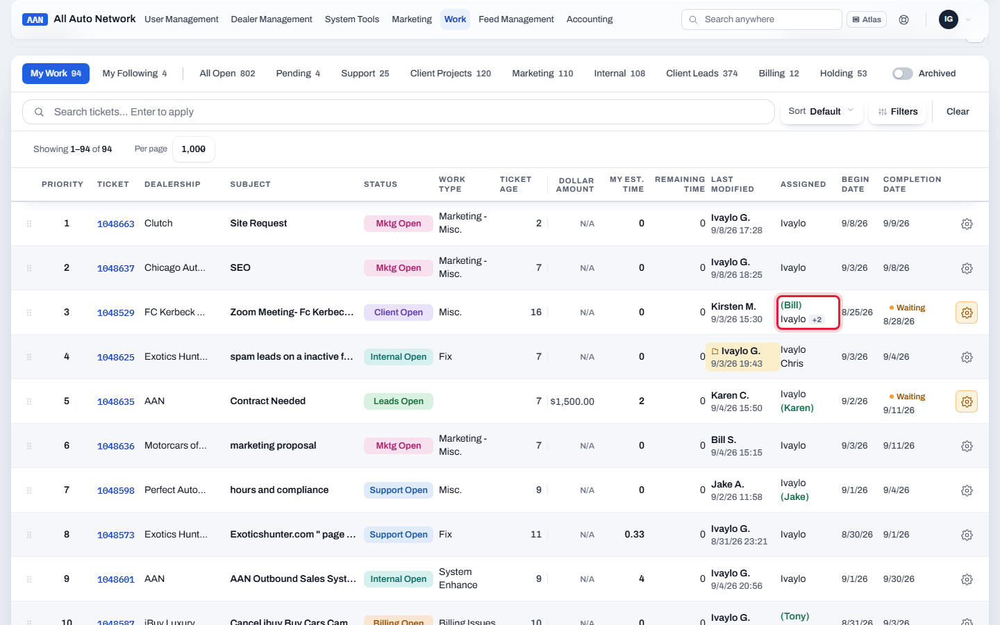
19-mwq-assigned-plus2 - #20My Work Queue2026-11-11Done…
This button is missing the "reporting" search drop down. Also, when we click this instead of it being a popup that closes can we have it open on the right side of the screen and stay open until we close it based on user as this is a search I would always want open on my screen since I use this search a lot.
What we did Reporting added to Filters with the production options verbatim (Waiting On Client, Past Due, Due Today work in the mockup; Tagged As Completed and Marketing Clients are server-side). Alex, Nov 16: a side panel, as All Vehicles. Filters is now the staff dock (Single Ticket's) on the right of the list: it opens from the Filters button, stays open until its × or the button closes it, does not cover the list, and comes back open after a reload. The list scrolls sideways inside itself while it is narrower. Below 1180px it is the tablet overlay, as every dock. Was: a popover over the right columns

20-mwq-filters - #21My Work Queue2026-11-11Done…
you should not have to click to get to the drop down to change positions this will make re-assinging orders take a lot of time when needing to adjust a bunch at once which we do on the daily It should just be a drop down like on the live system and not have up/down selections like when you click in this example, just simple drop down you can scroll up and down and see all the numbers easily as possible
What we did the rank is a plain
<select>0–299 in every row (dense 30px); the old click-to-edit number field is commented out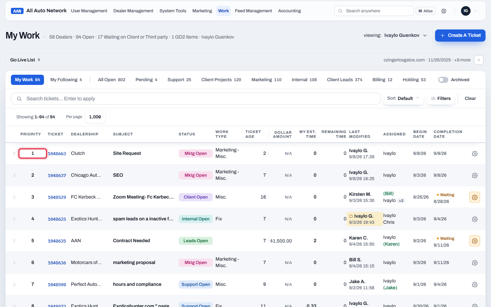
21-mwq-rank - #22Single Lead2026-11-10Built, as in the current system…
In our current system we have a left side bar named "Paperwork" I thought all dealers had defaults but I guess not but some dealers have them and we show this bar for all dealers. Anyway it is paperwork, like sales agreements, odemeter forms, etc that the dealers have to print in order to make the deal go through and for some dealers we have added these forms so that it populates them with the customers info and dealers info so when they print there is very little for them to adjust. Anyway I think this should be a section under the bottom of the workflow like maybe it's own box that shows any paperwork form links that the dealers might have then when they click on them it shows up in the main section to the right. For examples go into Scottsdale Autos Online as they have many paperwork links
What we did checked in the live lead card on Nov 16: a Dealer Paperwork tab lists the dealer's forms, and each one opens filled in from the lead (
sale_paperwork.php, one template per form). Chicago Motor Cars (the mockup's dealer) and Miller Motorcars have one form each: Credit Application. Built as a Dealer Paperwork section with its own nav item: the form button opens the application filled from the lead (the Credit App grid, sensitive numbers sealed) with a Print button. Bill's screenshot shows another dealer with more forms; those are per-dealer templates
22-single-lead-workflow-no-paperwork - #23Single Lead2026-11-10Done…
When the lead is a credit app we have a tab in the current system that reads "Credit App" and when clicked it opens the entire printable finance app so you see all the info. Now some users are blocked from seeing the credit app leads so if they are blocked from seeing it this tab doesn't show up for that user, but if not then on any lead that is credit app it would show up and when clicked open the lead with all the info laid out in a printable format. This should be a button here and then if clicked the section opens up with the info.
What we did a Credit App section and tab, shown only on credit-app leads (try
?id=16992), with Print Application. The sections and labels are the new backend's (d15 export), and its values come from the demo lead. Licence, birth date and SSN are sealed: no real applicant data is copied, though the export holds real ones. The per-user block is the server's. Also fixed: Overview stayed blue next to the current section in the tab row (pre-existing) Bill, Nov 17: "the Credit Application should not go under the Paperwork section it is different item", and asks for a link at the top that takes you to the Credit App. The link was already there (the Credit App tab, on credit-app leads only, as he asked on Nov 10); the confusion was ours: Dealer Paperwork offered a form named Credit Application (Chicago Motor Cars' only live form) that opened a second copy of the application. Paperwork now lists the forms from his item5 screenshot (Sales Agreement, Purchase Order Description, Title And Registration Application, Power Of Attorney, Waiver Of Service Contract, Statement Of Error, Plate Credit Refund Request; the Arizona state forms left out), one open at a time, each as the dealer's template with the lead's details filled in. On his page, "See your note" for #23 now opens a credit-app lead, so the tab is there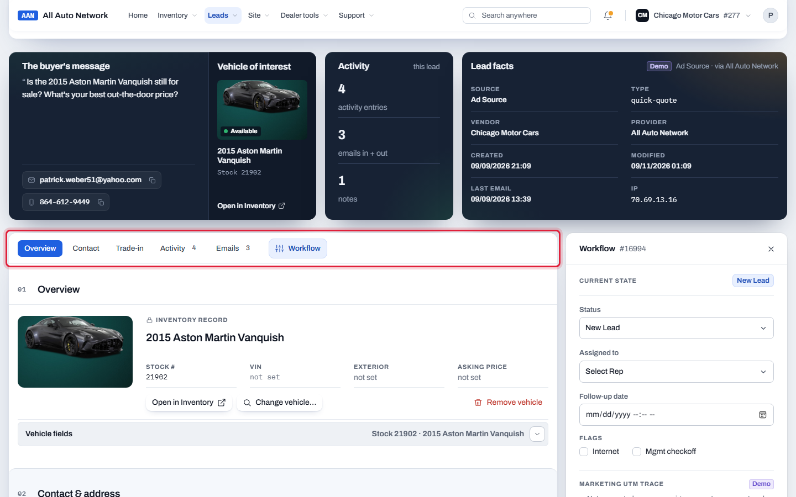
23-single-lead-tabs-no-credit-app - #24Single Lead2026-11-10Done…
Need a new button next to the back to board that reads "ReSend / Email" this button is a new feature Dima just added to the system recently that allows us to resend the lead emails to the dealership emails in the lead routing so if they say I never got that lead they can re-send the lead to their email or CRM that they use (emails in the settings).
What we did the button sits right after Back to board (sheet / small, the mail glyph); in the mockup it does nothing

24-single-lead-head-buttons - #25Single Lead2026-11-10Built, as in the current system…
no mockup for sending email?
What we did checked in the live lead's Email tab on Nov 16: Email To · BCC · Subject · File to attach · the message (a rich-text editor) · Send, with Inbox / Outbox / New / Reply. "Write email" now opens that composer in the Emails section: To is the lead's email, the subject is the vehicle, and To / Subject are required. Send puts the email at the top of the list as OUT (the demo has no mailbox). Not built: the rich-text toolbar (a plain message field here) and Reply on an incoming email
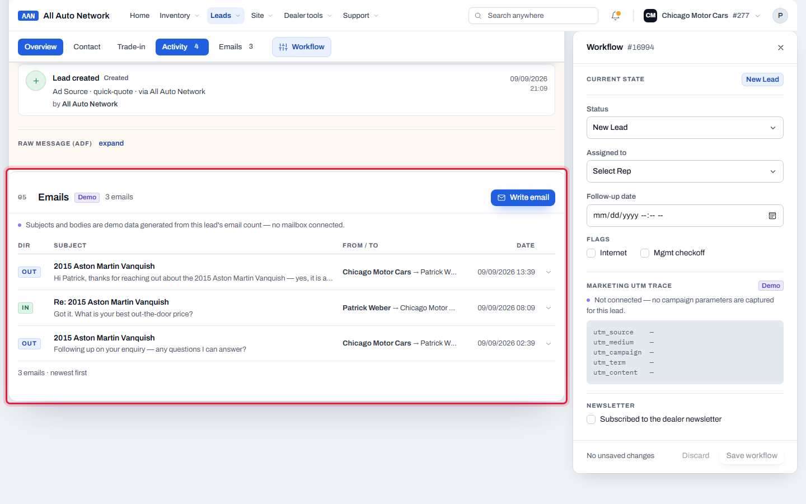
25-single-lead-write-email - #26Single Lead2026-11-10Removed (hidden, not deleted)…
this should be one checkbox labeled "Internet Management Checkoff" not 2 checkboxes
What we did the "Internet" box is commented out; the other reads "Internet Management Checkoff"
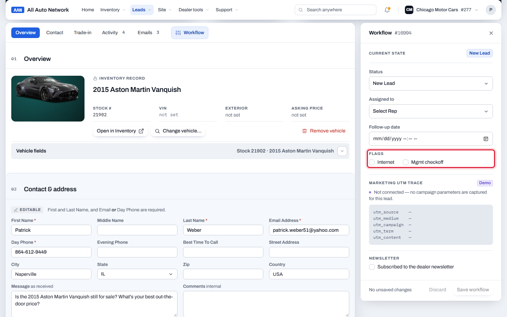
26-single-lead-two-checkboxes - #27All Leads2026-11-10Built, as in the current system…
Missing checkall checkbox and then there should be radio buttons above this bar for "Email" and "Bulk Update" as those features are in the current system and used by the dealers that use our CRM
What we did done: a select-all checkbox in the header (as the export's "Select all rows") and "Set status…" in the selection tray beside Assign / Unassign (the export's bulk status). Found and fixed: a selected row turned into a narrow rounded pill, because its class
selis also the system's select-control class (pre-existing, made obvious by select-all). Checked in the live Lead Manager on Nov 16: the two radios switch what the selection does. *Bulk Update* shows a "Change Status To" list, which the tray's Set status… already covers, beside Assign. *Email* (the default) shows a Send Email button that hands the selected leads to the Newsletter tools. That ties it to #57. Newsletter Tools came back on Nov 16 (Alex), so the tray's Send Email can now be added; not built yet Bill, Nov 17: the email option is missing. Checked in the live Lead Manager (from the button's code, then once by hand): Send Email opens Newsletter > Post Newsletter with the selected leads as a ready-made topic group (corp_crm_<date>_<time>), then Subject, HTML / Text message, Custom Template and Send Newsletter. It is a newsletter post, not a CC email. Send Email is now the first action in the selection tray (Email is the live default). The Post Newsletter page is not in the mockup, and Alex (Nov 17) wants no new page now, so the button leads nowhere and keeps the selection. Building the page is for later
27-28-all-leads-header - #28All Leads2026-11-10Built, as in the current system…
In the current system there is a column for Comments and if the dealer adds comments in the activity tab then ti shows the date the last comment was added to the lead so they know there is comments
What we did checked in the live Lead Manager on Nov 16: its Search list has a Comments column (between Phone and Make). Added after Follow-up: the date the last comment was added. The demo knows that date only where the lead's last activity is "Comments Added" (6 of the 50 shown); every other row shows "—". To make room, the Lead / Contact / Vehicle floors went down, so at 1440 more names, emails and vehicles are cut with "…" (86 of 288 texts, was 41)
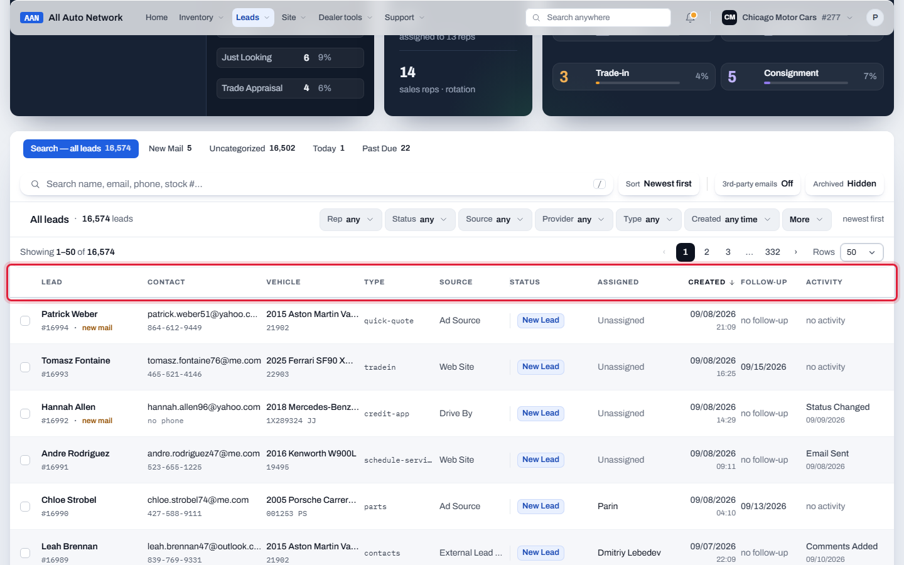
28-all-leads-columns - #29All Leads2026-11-10Built, as in the current system…
not to many dealers use our CRM but the ones that do (especially The Last Detail) use all the search features on the daily. This is missing the following: Available Stock # [drop down] field. Include Sold [checkbox]. When you click include sold it also list sold stock #'s in that drop down.
What we did checked in the live Lead Manager on Nov 16: "Available Stocks" (All, then "stock year make model") fills the Stock # search, with an "Include Sold" checkbox beside it. Built the same way in More → Vehicle of interest; the Stock # field now really filters and shows a chip. The list is the vehicles this demo's leads ask about (19); the fixture has no sold flag, so Include Sold adds nothing here. Also fixed: on tablet the More panel opened 153px off the left edge

29-all-leads-more - #30Single Vehicle2026-11-09Built, as in the current system…
missing the VIN Decoding styles/engines/transmission fields that are selectable in order to properly VIN decode cars the VIN Decoding does not work without these fields. will send you screenshot.
What we did checked in the live editor on Nov 16: a VIN Decoder Selectable block with three short pick lists (Decoded styles / engines / transmissions) and, when the decode returned no choices, "NO selectable for this vehicle." (a Decoder Rerun button sits by the VIN; the mockup's Decode VIN is that). Built under the Specs & VIN fields. The fixture has no decoded choices, so the lists are empty and the live empty state shows; a vehicle with
decodedlists fills them. The reference panels in Bill's screenshot (Vehicle, Weights, Engine, Pricing) were not asked for and are not added - #32Single Vehicle2026-11-06Done…
Should have HTML editor on this description box
What we did
richmoved to Description 2 (CKEditor mounts there)
32-33-single-vehicle-desc-tabs - #33Single Vehicle2026-11-06Done…
Should not have HTML editor on this screen as this is where they enter Options when no vin decoded options so they just enter each option on a new line
What we did Bulleted Text is a plain textarea, one option per line
- #34Single Vehicle2026-11-06Done…
Buyers Guides in current system fall under the window sticker tab but they do not need to be in the same section but there should be a Buyers Guide section under the window sticker that has all the links. and I think this Buyers Guide Text field should be in that same section as it is text that applies to that print of the buyers guides only.
What we did new "Buyers Guides" section after Window Sticker (and in the rail): the 9 print links (the live "In House … w/ No Service Contract" was missing and is added) and "Buyers Guide Additional Information". The Buyers Guide Text tab in Descriptions is commented out
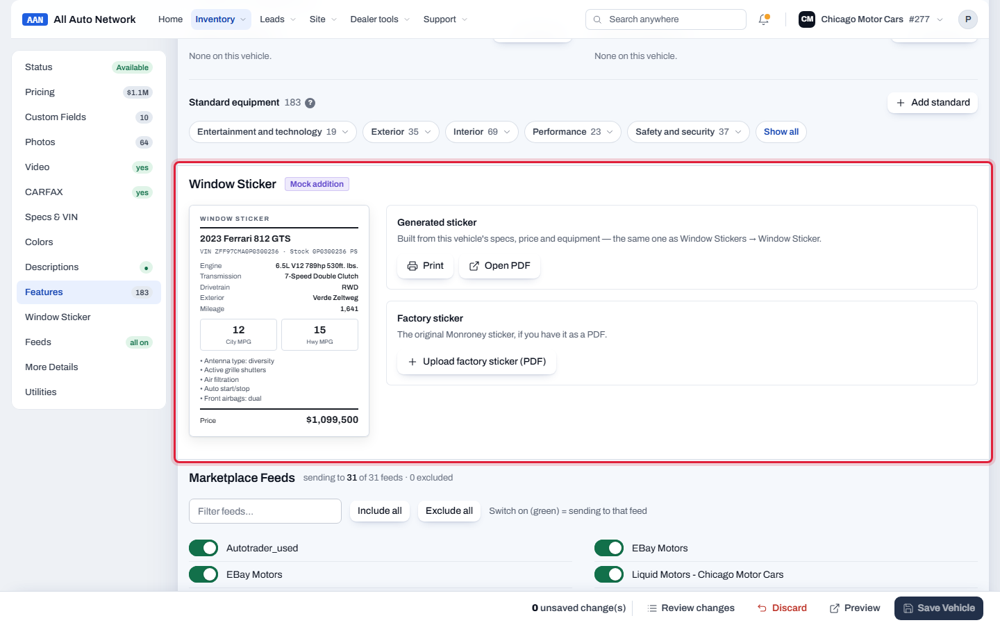
34-single-vehicle-buyers-guide - #35Single Vehicle2026-11-06After go-live…
Only some dealers have this custom feature right now (Exclusive, FC Kerbeck, mayber a couple others) but this is great and should be options for all so keep this here...as they could use it to print from as well but generally the ones who have this then show the sticker link on the VDPs of the cars.
What we did on the New features list (offer it to every dealer). Checked on Nov 16: Miller Motorcars' live editor has Window Sticker print links but no factory sticker, as Bill says (a custom feature for a few dealers); the mockup keeps it
- #36Single Vehicle2026-11-06Removed (hidden, not deleted)…
We don't have a PDF version so this button should be removed. We have a generic sticker for all dealers, then we have made custom ones but they are all HTML / image based and just open in a new tab to print.
What we did Open PDF commented out; Print stays
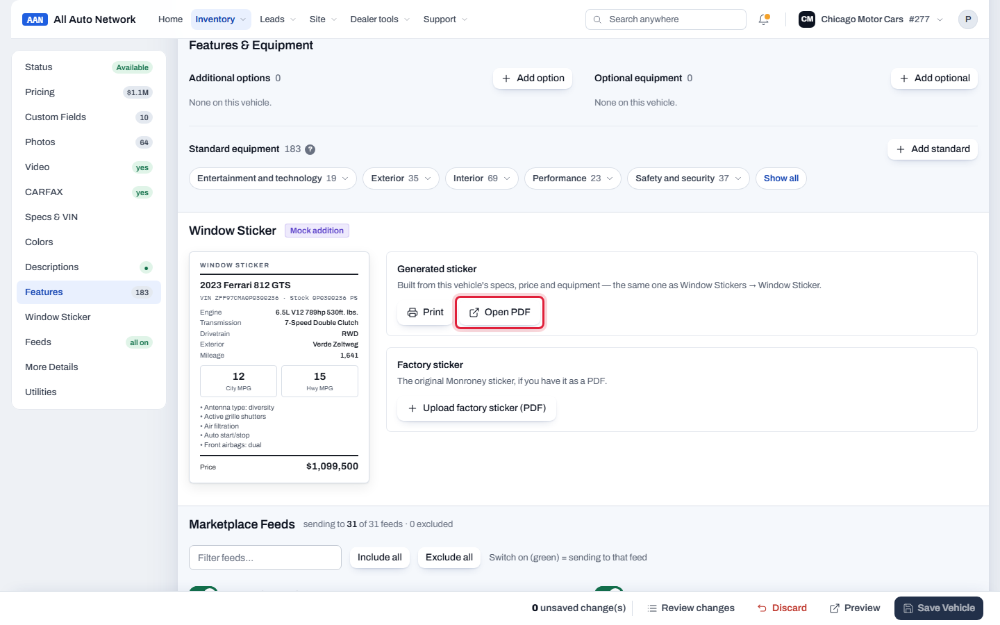
36-single-vehicle-open-pdf - #37Single Vehicle2026-11-06No change needed…
Please note that our image upload tool is in an iFrame as we use some 3rd party code for this feature
What we did for the handoff: the photo row stays a mock; the uploader itself is the 3rd-party iframe
- #38Single Vehicle2026-11-06Done…
so we only do YouTube Videos and all newer sites allow for multiple in the same field so we just need a textarea box as you just put each video on a new line in the same field. We can remove the Other Video Link field as it is not something we have in our system currently.
What we did "YouTube URLs" is a textarea, one link per line (the preview shows the first); Other video link commented out
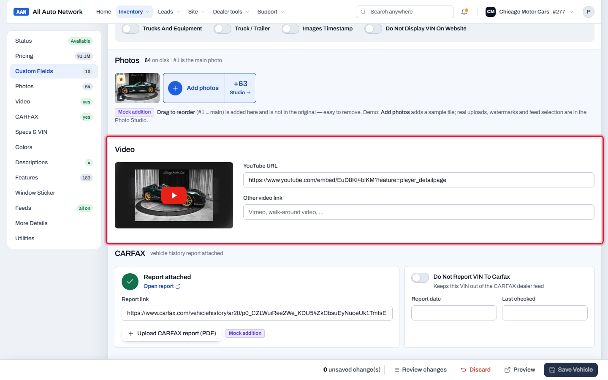
38-single-vehicle-video - #39Single Vehicle2026-11-06After go-live…
Please note only a couple dealers have this custom option to not report vins but we should keep it and make it a new feature available to everyone as we could use it not to report a vin if the dealers want to wait on sending the cars to carfax.
What we did on the New features list (for every dealer). Checked on Nov 16: in the live editor it is the per-dealer custom field
no_carfax(Miller Motorcars has it); the mockup keeps it - #40Single Vehicle2026-11-06Removed (hidden, not deleted)…
Only dealer who uploads a carfax report in our system is Mild Collection so this would only be for them. Carfax sends us URL links only no PDFs.
What we did checked on Nov 16: the live editor (Miller Motorcars) has no CARFAX upload, only the report link. The Upload CARFAX report (PDF) button (a mock addition) is commented out; the empty state now says "Paste the report link". It stays a per-dealer option for Mild Collection
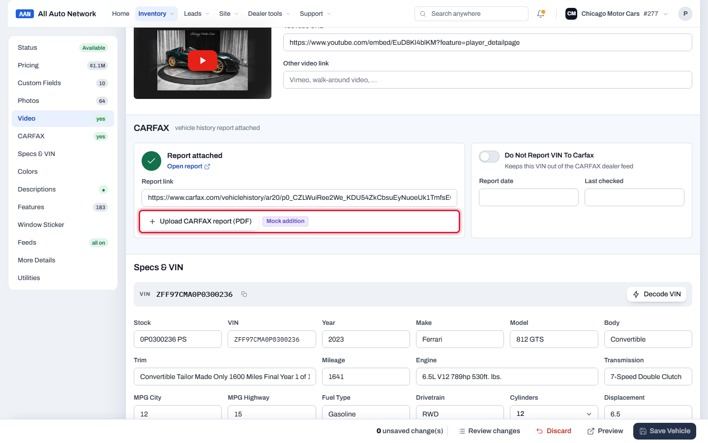
40-single-vehicle-carfax-upload - #41Single Vehicle2026-11-06Removed (hidden, not deleted)…
we also don't have this data but we send/receive data twice per day
What we did Report date / Last checked row commented out in the CARFAX card

41-42-single-vehicle-carfax-dates - #42Single Vehicle2026-11-06Removed (hidden, not deleted)…
we don't have this info so this field can be removed
What we did same
- #43Single Vehicle2026-11-06Built, as in the current system…
So the system auto locks a record when someone is editing it...it should show the record as locked on the main inventory admin screen with 2 options (view only / unlock and take controls), then if you choose view only when you land on this page it should show you at the very top who is editing and when they started their edit session. If you need screen shot examples I can try to find some for you?
What we did no screenshots needed: the live inventory list's own code (checked Nov 16) has unlockVehicle(), which asks "This vehicle being edited by NAME since TIME. Are you sure you want to unblock and take control of next save". No car was locked at the time, so the list's lock marker itself was not seen. Built: a locked car's open row in All Vehicles replaces Edit vehicle with "Being edited by another user" and View only / Unlock and take control (the live confirm). View only opens the editor locked (
#view): the top notice says who and since when (demo name and time) and Save is blocked; Unlock opens it with your lock - #44Single Vehicle2026-11-06Removed (hidden, not deleted)…
no dealers use this field so it can be hidden it was left over from one dealer 20 years ago and got added to all by mistake but is never used.
What we did Zero Down switch commented out (JS guarded)
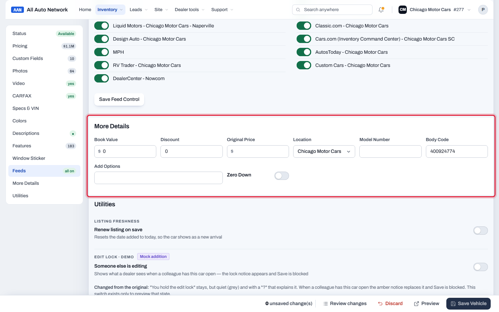
44-50-single-vehicle-more-details - #45Single Vehicle2026-11-06Removed (hidden, not deleted)…
This field in the database is used by the vin decoding so it is covered above in the options and doesn't need to display here as it would be a jumbled mess of data in this format field
What we did same block
- #46Single Vehicle2026-11-06Removed (hidden, not deleted)…
You can remove this as it is not used for any dealers
What we did same block
- #47Single Vehicle2026-11-06Removed (hidden, not deleted)…
Not needed...I only feed this data in from Homenet because they send it but no other feeds have it and we do not need this field in any databases really. Not Used for any dealers for anything real
What we did same block
- #48Single Vehicle2026-11-06Removed (hidden, not deleted)…
remove Original Price as this is not a real thing...there is just price history under the price fields in the main price field section
What we did same block
- #49Single Vehicle2026-11-06Removed (hidden, not deleted)…
remove discount this is a field that needs to be deleted from all dealers databases as it is not used
What we did same block: Discount is hidden on Single Vehicle (with Book Value and Original Price, #48). Discount Price is a different field and stays: the live system uses and shows it, and Karen #69's Discount Price column is in All Vehicles → Columns → Pricing. Bill, Nov 17: confirms it: "the discount field is not used by any dealers and doesn't display in live system for anyone", and Discount Price "is covered". No change
- #50Single Vehicle2026-11-06Removed (hidden, not deleted)…
remove book value this is a field that needs to be deleted from all dealers databases as it is not used
What we did same block; More Details keeps Location only
- #51Single Vehicle2026-11-06Done…
There would be 2 sets of colors from VIN decoding, one for Exterior and one for Interior so I think you should have the colors section as one big section but break into two parts first Exterior and then Interior so that the fields and color swatches are grouped together for what they are for.
What we did Colors is two groups: Exterior (Exterior Color, Basic Exterior Color, the factory swatches) and Interior (Interior Color, Basic Interior Color). Interior swatches come when the decode returns interior colours (none in the fixture)

51-single-vehicle-colors - #52Single Vehicle2026-11-06Done…
This should be on top of all the other sections...this is the meat and potatoes about the car and shows them that they are on the right car when they land on this edit car page
What we did the section, its rail button and the scroll-spy order moved to the top; the rail lights Specs & VIN on load
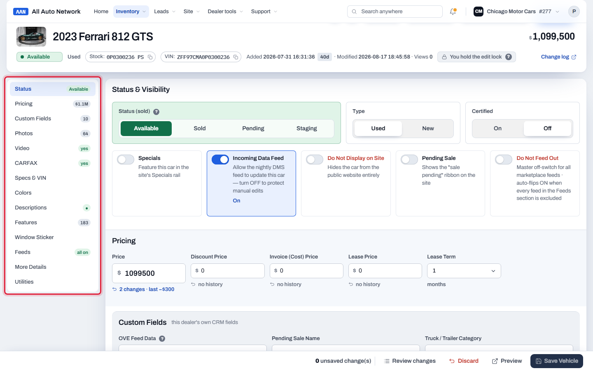
52-single-vehicle-specs-position - #53Single Vehicle2026-11-06Removed (hidden, not deleted)…
there really is no staging area...this is limbo land created by mistake in our current system. the Staging happens when someone submits the first step off the add a vehicle form but then doesn't save it on the second step then the car goes into a staging category and makes it impossible to find unless you search ALL from the main inventory admin screen, so I'm not against this staying in there with the sold/available status so that dealers can see what is tagged accidentally that way I guess. We do not have a Pending option so that should be removed as that is not an option in our system. Sale Pending is accounted for below and is the only pending option we have.
What we did the Pending button is commented out: Available · Sold · Staging
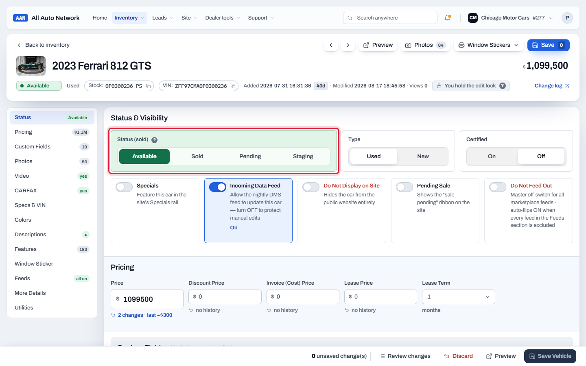
53-single-vehicle-status-pending - #54All Vehicles2026-11-06Done…
Note sure if it is possible to upload from this screen since our image uploader is in an iFrame, but this could link to the image upload tab inside the edit vehicle I guess
What we did "Upload photos" opens the editor at its Photos section (
single-vehicle-gen11.html#photos) - #55All Vehicles2026-11-06Done…
I know the edit button and the delete button (not all dealers get delete since so dangerous and we need to warn before activating on each dealer) but the photos and window sticker icons - will they link to those tabs in the edit of the car or something? Since there is window sticker links and buyers guides and most dealers don't even use ours?
What we did they open the editor at Photos / Window Sticker (
#photos, new#sticker); same for the expanded row's buttons - #56All Vehicles2026-11-06Built, as in the current system…
Would love to see what this feature is? doesn't do anything so maybe it is future mod to the system?
What we did "Inline edit" now turns on the live system's in-list editing (see #65); the button stays pressed while it is on
- #57All Vehicles2026-11-06Decided by Alex…
We are missing the "Newsletter Tools" link. While I'm not a big fan of advertising our barely working newsletter tool, a lot of dealers use it to download email lists for importing into other better newsletter tools and some dealers do have our newsletter subscribe forms on the front end of the site and this is where all that info is collected so it is needed.
What we did Alex, Nov 16: bring back Newsletter Tools only. The live dealer menu has it under Marketing (with Auto Locator). A Marketing menu with the one item "Newsletter Tools — Email lists and subscribe forms" is back on all four dealer pages; Craigslist posting stays commented out with the rest of the Oct 29 Marketing menu. The extra menu item made the one-row dealer bar overflow by up to 93px between 1024 and 1130px, so the shared two-row bar now starts below 1140px instead of 1024px

60-dealer-nav-inventory-menu - #58All Vehicles2026-11-06Built, as in the current system…
Us admin users need a "Form Editor" link here but dealers do not as it is just how we create AAN forms for dealers or edit existing.
What we did the live dealer menu has Form Editor under Site Management (checked Nov 16). It is added on all four dealer pages, labelled "Dealer forms · AAN admins only" and marked
data-admin-only, so the backend can hide it from dealers
58-dealer-nav-site-menu - #59All Vehicles2026-11-06Removed (hidden, not deleted)…
there is really just the lead manager, there is not pages for the other links listed in this drop down so not sure unless those will be new features built out but currently it is just a link to our CRM
What we did the live Leads menu is only the Lead Manager (checked Nov 16). Customers and Referrals are new-backend pages that are not in the live system, so they are commented out on all four dealer pages and moved to the New features list
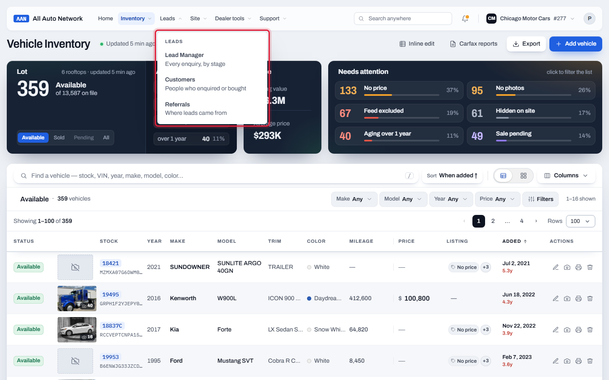
59-dealer-nav-leads-menu - #60All Vehicles2026-11-06Done…
So not every dealer has sort order so please note that will only show up as custom item for dealers that have that set up. As for New Submissions what is that? If it is newly added cars then they can see that in the inventory list below and sort by dates. We are missing the Feed Out Manager and most dealers 2020 and newer should have that link as it is a way for them to edit all available cars at once for their outgoing feeds
What we did Feed Out Manager added to the Inventory menu on all four dealer pages. New submissions is not in the live system (checked Nov 16), so it is commented out and moved to the New features list. Sort order stays (per-dealer, noted)
60-dealer-nav-inventory-menu - #61All Vehicles2026-11-06Built, as in the current system…
How do you change the order of the fields listed? We have a default that is there for every new user but they can customize it and then it remembers their layout so it is always the same when they login and they like to have them in a specific order. I know mine is very custom and then i have one field at the far right that I swap for other fields when I'm looking into issues for clients. The current system has a gear next to the heading that you can quickly swap it with another un-used field option and my default is for feeds, but then I change it to say carfax or locations or another field of data I need to see quickly on all cars when I'm looking into support issues for clients so I need to be able to swap the field quickly without adding and removing another column to my list
What we did the mockup already had it in Columns: show or hide, move up / down, Reset, all remembered. Checked in the live Inventory Manager on Nov 16: every heading has a preferences icon whose menu lists the unused fields, then "remove item" and "Reset to default (all columns)". Added the same to the headings: a swap icon on each column the dealer may change (not Status, Stock, Make, Model, Price, Actions, nor the narrow Year); its menu swaps the column in place for an unused one, removes it, or resets. Choices the table has no room for are marked "No room" (the existing no-sideways-scroll rule), so at 1280 and on tablet only Remove and Reset are open. The layout is kept in this browser; per user on the server is a question for Ivaylo Bill, Nov 17: "all fields should have that change the field...looks like missing on year/make/model/stock". Right: the live list has it on every heading, and leaving Status, Stock, Year, Make, Model and Price out was our own call. Now every field column has it (only Actions, which is not a field, has none), and those six are no longer "Always shown" in Columns either. Year is 12px wider for its icon; with Filters open at 1280–1400 that room comes from Stock and Make (8px each). The icon itself went from 22 to 20px, which also fixes Mileage's heading, clipped by 3px at 1280 before
- #62All Vehicles2026-11-06Removed (hidden, not deleted)…
Not sure if this is needed because most dealers do not search by options, but we could have the keyword search at the top of the search listing just search options as well so they could do a keyword search as if this options list had to show all options for all there inventory the lists would be in the millions as every brand words stuff differently and when dealers manually add options then they definitely write them all different, but as stated with the keyword search being able to search them I feel that is enough for the options.
What we did checked on Nov 16: the live Inventory Manager has no options filter and no keyword search (only per-column fields: Stock#, VIN, Make, Model…), and the new-backend export has no options filter either. It was a mockup demo, so the Options filter is commented out. The keyword search (from the export) does not cover options yet: the fixture has no option data. Question to Ivaylo

62-all-vehicles-options-filter - #63All Vehicles2026-11-06No change needed…
Not sure where the custom fields items came from but for custom items only some dealers have these so if this is just to show how a dealer with custom items would show up that is fine but just note not all dealers have them and even dealers with custom fields not all have them show up on this page only a handful that asked for them that are items that would need changed or checked daily type of things.
What we did noted for the handoff: custom columns are per-dealer
- #64All Vehicles2026-11-06Built, as in the current system…
This section should also show totals for discount price and total invoice (cost) price's too...the dealer that requested this in the old system actually asked for all 3 totals so this new display needs to account for that too
What we did checked in the live Inventory Manager on Nov 16: above the list it shows Total Price, Total Discount Price and Total Invoice Price. The Value card now has Total discount price and Total invoice price under Average price. The figures are Chicago Motor Cars' live totals on Nov 16: $0 and $0 (it fills neither field; live Total Price that day was $48,693,588 for 327 cars). The asking value stays the export's ($66.3M, Sep 9), so the card mixes two dates; the title on the totals says where they come from. The top row of cards is 38px taller
- #65All Vehicles2026-11-06Built, as in the current system…
Here is a list of fields that should be editable from this screen so dealers can update them on multiple vehicles at one time then on the old system we had an update button at the bottom and they could click and save all cars at one time rather then needing to edit these items one car at a time): Price [input field] Discount Price [input field] Invoice Price [input field] Do Not Display On site [checkbox] Sale Pending [checkbox]
What we did the old Inventory Manager edits Status, Price and Discount Price in its rows with one Update button (checked Nov 16). "Inline edit" shows exactly that: Status · Stock · Year · Make · Model · Trim · Price · Discount Price · Actions, changed fields in blue, a bottom bar with Discard and Update. Invoice Price, Do Not Display On Site and Sale Pending (Bill's list) are not in the old list, so they are commented out and on the New features list (facelift rule, Alex Nov 16)


7 Screenshots we would love from you
These were built from the current system's code, or from a dealer that does not have the case. A screenshot of the real thing would confirm them.
- #43 Edit lock: the Inventory Manager list while a car is locked by someone (the marker in the row and what clicking it offers), and the editor opened "view only" (the line at the top with who and since when).
- #65 Bulk update: the Inventory Manager list of a dealer whose rows also have Invoice Price, Do Not Display On Site and Sale Pending as fields (Miller's list has only Status, Price and Discount Price).
- #28 Comments column: a Lead Manager search list where the Comments column has values, to see the date format.
- #29 Include Sold: the Available Stocks list with Include Sold ticked (how sold cars are marked).
- #35 Factory sticker: the factory sticker in the vehicle editor of a dealer who has it (Exclusive or FC Kerbeck), and the sticker link on their site.
- #40 CARFAX PDF: Mild Collection's CARFAX upload in the vehicle editor.
- #25 Email: the lead's Email tab after Reply on an incoming email.
4 Your ideas, saved for after go-live
- Inline edit: Invoice Price, Do Not Display On Site, Sale Pending (All Vehicles, #65, Bill). Commented out Nov 16; the new backend has vehicles.bulk-update.
- #15 Waiting on co-worker (Bill, Nov 11, mwcgc0w84959z): a checkbox plus a person picker. The ticket shows as "waiting" on my list until the co-worker completes their part, while it stays open on theirs.
- #35 Factory sticker for every dealer (Bill, mw5kv39pqa4yu): today only some dealers have it.
- #39 Do Not Report VIN To Carfax for every dealer (Bill, mw5kk2nxqfx3n): today it is a custom option for a few dealers.